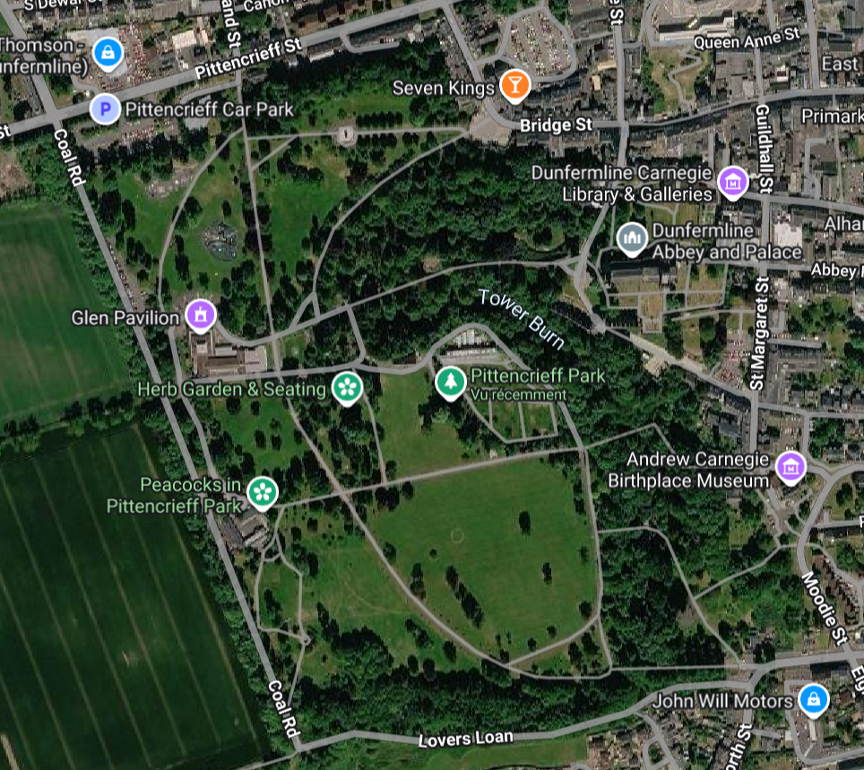

Restoring biodiversity to Pittencrieff Park, one root at a time.
Pittencrieff Park has lost key species from its grounds. Butterflies, swallows, tits, bats, hedgehogs and red squirrels have all but disappeared from the park's ecosystem. Meanwhile rats, mosquitoes and processionary caterpillars have taken over.
"The disappearance of natural predators and pollinators within Pittencrieff Park has created a vacuum that pest species have filled. CityRoots will restore it."
This is not a coincidence. Habitat fragmentation, light pollution from surrounding urban areas and the loss of nesting infrastructure have systematically dismantled the ecological networks that once made Pittencrieff Park vibrant with life.
CityRoots is a consulting firm commissioned to restore biodiversity within Pittencrieff Park. Our strategy focuses exclusively on the park's 76 acres — combining green infrastructure, AI-powered monitoring and harmonious wildlife coexistence protocols, all without lethal methods.
A city, parish and former Royal Burgh in Fife, Scotland — once a royal capital, now at the heart of a new ecological transition. Our intervention is focused on its crown jewel: Pittencrieff Park, a 76-acre green heritage site and the primary site of the CityRoots rewilding project.
Dunfermline residents who benefit directly from a restored Pittencrieff Park ecosystem at the city's heart.
Butterflies, swallows, tits, bats, hedgehogs and red squirrels have vanished from the park's grounds.
Rats, mosquitoes and processionary caterpillars now dominate the park — a sign of its broken ecosystem.
The 76-acre green heart of Dunfermline — gifted by Andrew Carnegie in 1903 — is the primary site of our rewilding intervention and ecological monitoring.

Discover the satellite maps, garden plan, flora & fauna, and historical features of Scotland's most celebrated urban park.
Enter the Park →A thorough ecological diagnosis of Pittencrieff Park reveals two parallel crises: the silent disappearance of keystone species from the park's grounds, and the unchecked proliferation of opportunistic ones.
A multi-layered strategy deployed exclusively within Pittencrieff Park — combining green infrastructure, AI-powered monitoring and community engagement to restore the park's broken ecosystem.
Free kits distributed to residents near the park to create 13cm openings in garden fences, connecting their gardens to the park's ecosystem. Wildlife underpasses installed at key road crossings, locations determined by real sighting data collected via the CityRoots app.
Green InfrastructureRoadsides and less-visited areas transformed into wildflower corridors linking all green zones of the park. Seasonal mowing reduced to twice a year. Green roofs installed on park shelters act as stepping stones for butterflies and insects between wooded areas, meadows and flowerbeds.
Habitat RestorationAI-powered acoustic monitors deployed across Pittencrieff Park to identify bird songs and bat echolocation in real time, mapping species' return and tracking ecosystem recovery.
AI TechnologyA citizen science mobile app allowing park visitors to report sightings, nests, and pest zones within the park. Data feeds into our live biodiversity monitoring dashboard.
Digital / CrowdsourcingNetwork of nest boxes on park buildings, maintenance structures and trees to replace lost nesting sites for swallows and tits. Selected boxes fitted with cameras allowing schools and scientists to monitor breeding activity in real time — turning Pittencrieff into a living science classroom.
IoT / ScienceBat boxes installed on heritage buildings and older trees. Night lighting redesigned: lights redirected downward, warm-spectrum LEDs replace standard white lights. Designated dark corridors established within the park — natural routes with minimised lighting — allowing bats to hunt freely. One bat consumes up to 3,000 mosquitoes per night.
Habitat RestorationPittencrieff established as a fully protected red squirrel zone. Feeding stations with entrances too small for grey squirrels give the native species a guaranteed food advantage. Oral contraceptive bait stations gradually reduce the grey squirrel population over time — a proven, non-lethal method currently being trialled across the UK.
Species ProtectionEvery solution within the park respects our core principle: no lethal methods. We work with nature, not against it.
Three BUT R&T graduates from the IUT de Béziers, commissioned to restore biodiversity within Pittencrieff Park. Combining network technologies, digital solutions and field research, they built CityRoots from the ground up to deliver a complete rewilding strategy for the park.
Commissioned to lead the ecological diagnosis and digital solutions for Dunfermline. Brings a methodical approach to urban biodiversity challenges, combining field analysis with innovative tech-driven responses.
Specialises in the technical architecture of the rewilding project — from IoT sensor networks to citizen science platforms. Designed the connectivity backbone that powers CityRoots' monitoring systems.
Drove the research and data strategy behind the species diagnosis. Expert in digital tools and network infrastructure, Younes ensures the project's solutions are both technically sound and ecologically meaningful.
Full estimated budget for the CityRoots Dunfermline Rewilding Programme — Year 1. All figures in pound sterling (£).
| Category | Description | Amount (£) |
|---|---|---|
| Green Infrastructure | Hedgehog highways (300 units), green bus stop roofs (15 stops), wildflower planting | £18,500 |
| Nest Boxes & Bat Roosts | 200 smart nest boxes with cameras, 50 bat roost units, installation labour | £22,000 |
| AI Acoustic Sensors | 12 acoustic monitoring units, software licence, AI model training & deployment | £31,500 |
| Dunfermline Wild App | Mobile app development (iOS & Android), backend infrastructure, 1 year hosting | £28,000 |
| Controlled Ponds | 3 urban ponds construction, dragonfly habitat seeding, ongoing maintenance | £14,200 |
| Smart Waste Bins | 40 smart sealed bins with ultrasonic rat deterrent, installation | £16,800 |
| Citizen Engagement | Community workshops, signage, educational materials, school programme | £7,500 |
| Research & Monitoring | Year 1 ecological survey, biodiversity baseline, quarterly reporting | £12,000 |
| Project Management | CityRoots team fees, travel, coordination with Dunfermline council | £19,500 |
| Contingency (10%) | Unforeseen costs, emergency interventions | £17,000 |
| TOTAL BUDGET — YEAR 1 | £187,000 | |
CityRoots operates in partnership with public institutions and private sector sponsors committed to urban ecological transition.